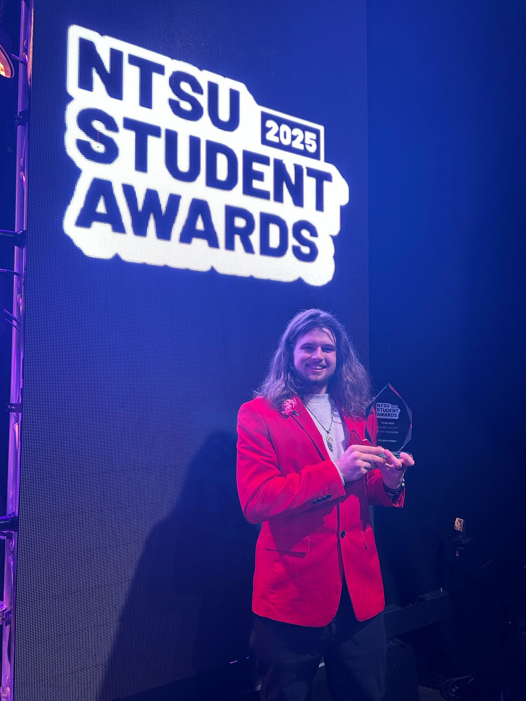

Analysis and Evidence of Own Skills
Introduction
I have previous industry experience in software development, this means I'm well equipped for creating software particularly in web development. Some examples include AWS, PostgreSQL, Atlassian suite as well as stakeholder management.
Leadership
I have many experiences of leadership. My most recent examples is my School officer role and System Analysis and Design coursework where I was the team lead.
Team lead
I led my team in System Analysis & Design, delegating tasks and using an agile approach with components of extreme programming. Through this I had the opportunity to mentor my team in UX/UI principals such as accessibility using the Web Content Accessibility Guidelines, database design through understanding entity relational vs flat file vs document based design paradigms. I weighed project work vs the needs of the team, for example, a team member had to take some personal time and I re-delineated work to accommodate this. Being a leader is more than just organising; it's handling people and communicating with grace, it's teaching not just doing it yourself that allows the team to perform exceptionally, it's ensuring everyone understands the vision, goal and their responsibilities.
School Officer
As school officer, I organised a few events for course reps to share concerns as well as socialize. I also led some of the focus groups in school forums collecting feedback on school issues such as technology, teaching quality, course content, timetabling and etc. Furthermore, I helped students with issues including, after a meeting with the student, I was able to to share their concerns with the course leader and promptly arranged a sit down between the two. I won School Officer of the Year 2025!
Governance
The Elections Committee
My experience of governance most recently is through my Elections Committee work. Understanding the Student Union code and translating that over to election regulation where the rules for how the election is run are written decided by us. Meeting legal obligations such as those under the Education Act 1996 and Education Act 2011, deciding complaints process and considering implications on different demographics where important too. Act of governance truly shone through when the Election Committee decided that we would remove the segregation between digital and in-person campaigning and when we had to interpret the regulation to justly respond to a complaint with serious ramifications on the election.
DevSecOps
Majority of evidence for technical skills can be found through my various repositories and contribution through git or Knowledge and Skills Development.
Programming Languages
|
Web Development Skills
|
|---|---|
Familiar Libraries
|
Familiar Technologies
|
Familiar Products
|